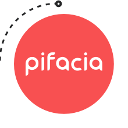

ChatPlusAI 避坑指南：授权、额度、TikTok 接入里那些容易翻车的地方
ChatPlusAI 看着是个省心的跨境客服工具，但授权用错电脑、TikTok 二次授权假成功、AI 额度算不清……这些坑我替你踩过了，照着做能省好几天排查时间。
做跨境电商的朋友最近都在聊 ChatPlusAI，去它的官网看了一眼就懂了——一个把 Shopee、Lazada、TikTok Shop 这些平台的店铺会话统一收进来，还带 AI 自动回复和跟单的桌面客户端。看着功能挺全、上手也简单，但我第一次用的时候踩了好几个坑，有些折腾了两三天才搞明白，今天整理出来给大家打个预防针。
坑一：授权随便找台电脑，差点触发 IP 关联
从ChatPlusAI下载拿到安装包之后，我第一次给 Shopee 店铺授权时图省事，在公司一台没登录过卖家中心的测试机上操作了。授权流程倒是走通了，但心里总觉得不踏实——查了一圈才发现 ChatPlusAI 官方反复强调的"授权必须用常用电脑和网络"真不是一句废话。
跨境平台对 IP 关联的风控有多严做过店的都懂：多个店铺共用同一个 IP 或设备指纹，轻则限制功能，重则直接封店。授权那一步是在平台官方卖家中心网页上走的，完全暴露在平台的 IP 风控规则下，和你手动登录 Seller Center 没区别。我那台测试机从来没登录过这个店铺的卖家中心，要是平台判定这个授权行为的 IP 和店铺历史常用 IP 差异太大，后果不堪设想。
解法也简单：授权只用你平时登录该平台卖家中心的那台电脑、那个网络。我后来换到自己的办公电脑重新走了一遍授权就没事了。而且授权完成之后日常接待反而没这个顾虑——日常的消息同步、AI 回复、快捷回复全部走平台官方 API，不经过你的浏览器 IP，在家里、咖啡馆、手机热点操作都没问题。这也是 ChatPlusAI 和那些模拟浏览器做客服工具的本质区别：走 API 通道的天然没 IP 关联风险。
坑二：TikTok Shop 二次授权显示"成功"，其实是假的
Shopee 和 Lazada 的授权我都顺利过了，到 TikTok Shop 时差点翻船。我有两个 TikTok 店铺，第一个授权完接着给第二个授权，网页上居然也显示"TikTok store added"成功了。结果切回客户端一看，第二个店铺根本没出现在列表里。
排查了好久才搞清楚原因：浏览器里残留了前一个已授权 TikTok 账号的登录态。TikTok Shop 授权页面检测到浏览器里已经有登录账号，就直接拿那个账号走了一遍授权流程，显示的"成功"其实是在给已经授权过的店铺再授权一次——新店铺根本没机会进来。
这个坑在卖家群里挺常见的，ChatPlusAI文档里专门写了提醒。解法有两个：要么用无痕/隐私浏览窗口打开授权链接，在无痕窗口里登录新店铺账号；要么在新的浏览器窗口里先退出所有已登录的 TikTok 账号再操作。我自己用无痕窗口之后，第二个店铺一次就授权成功了。
另外 TikTok Shop 还有一个容易忽略的点：子账号没有授权权限。必须用卖家主账号来走授权流程，子账号登录的话根本看不到授权确认页面。
坑三：AI 额度突然用光，不知道哪种场景在扣
ChatPlusAI 每个套餐有两种月度 AI 额度，但我一开始把它们混为一谈，结果到了月中 AI 突然不回复了才发现额度已经见底。
两种额度的计算逻辑完全不一样：
- AI 精准回复额度是按月度订单数算的——AI 只要参与了某个订单的接待，不管回复了几条消息，这个订单只占一个额度。不是按消息数计数，这点挺厚道的。
- AI 跟单额度是按月度独立买家数算的——催付、物流关怀、弃单挽回、催好评这几个场景共享同一个买家池，同一个买家不管被几个场景跟进，只计一个买家数。
两个额度都是北京时间每月 1 号重置，不是按你激活套餐的日期算。我第一次用的时候以为是激活日起算的 30 天，结果到 1 号那天额度突然归零又重新满血，吓了一跳。
额度用完之后对应功能会自动暂停：精准回复关了之后，翻译、快捷回复、超时自动回复这些不占额度的功能照样正常；跟单额度用完就是催付、物流关怀、弃单挽回、催好评全停了。有个挺实用的省额度思路：把 AI 精准回复只开在高频重复的售前场景，售后和复杂问题让人工接，省下来的额度留给复杂场景优先用快捷回复模板处理。
坑四：以为日常接待也要固定 IP，白白把自己锁在工位上
这个坑和第一个坑容易搞混。有些卖家一看到"授权必须用常用电脑网络"就理解成了"所有时候都要固定 IP"，结果天天守在一台电脑前不敢挪窝。
其实授权阶段和日常阶段的通道完全不同。授权那一下是在平台网页上走的，暴露 IP 和设备指纹；但授权完成后，ChatPlusAI 的所有日常操作——消息同步、订单拉取、AI 自动回复、快捷回复发送——全部是通过平台官方 API 接口完成的，根本不经过你的浏览器。换句话说，你在客户端里点一下"回复"，ChatPlusAI 直接把消息通过 API 推到平台服务器，你的本地 IP 在这个过程中完全不会被平台看到。
所以完成授权之后，你在公司 Wi-Fi、家里、咖啡馆甚至手机热点上打开 ChatPlusAI 接待客户，都是零 IP 关联风险。我自己有时候出差在高铁上用手机热点打开客户端回消息，接待、AI 自动回复、跟单催付全都是正常工作的，没有触发过任何异常。

防坑清单
最后把几个关键点整理成速查清单：
- 授权阶段必须用该平台卖家中心的常用电脑 + 常用网络，授权完成后随便在哪操作都安全
- TikTok Shop 多店铺授权一定要清浏览器登录态，用无痕窗口最省事；而且必须用主账号，子账号没权限
- 两种 AI 额度分别按订单数和独立买家数算，每月 1 号北京时间重置，不是激活日起算
- 日常接待走官方 API 通道，和你的本地 IP 完全无关，不要被浏览器模拟类工具的旧印象带偏
- 额度用完对应功能自动暂停，翻译、快捷回复、超时自动回复这些基础功能不受限，省额度优先开高频重复场景
知道这些坑之后，ChatPlusAI 其实相当省心——统一收件箱把多平台会话集中管理，AI 自动回复把 80% 的重复咨询拦下来，跟单场景自动跟进催付和物流关怀，日常打开就能接单。关键就是别在授权那一步大意，别把两种额度搞混，剩下的功能老老实实跟着文档走就行。这些排错经验和配置样例我做了多份备份，在GitHub、Gitee、GitCode上都能找到。